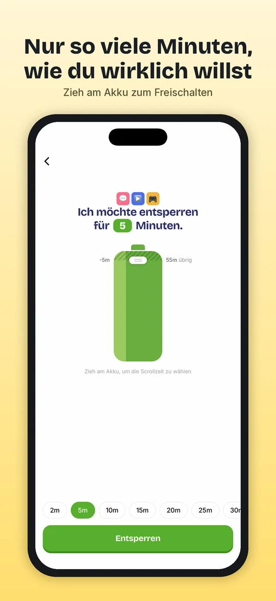

Bildschirmzeit am iPhone begrenzen: so geht’s
Mit der Bildschirmzeit bringt das iPhone schon ein eigenes Werkzeug mit, um Apps zu begrenzen. Für viele reicht das. Wer seine Limits aber ständig wegklickt, braucht etwas, das sich weniger leicht übergehen lässt. Hier findest du beides.
App-Limits in der Bildschirmzeit einrichten
- Öffne Einstellungen → Bildschirmzeit und schalte die Bildschirmzeit ein, falls sie noch aus ist.
- Tippe auf App-Limits → Limit hinzufügen, wähle eine Kategorie oder einzelne Apps und leg eine tägliche Zeit fest.
- Optional: Mit der Auszeit planst du Zeiten, in denen nur erlaubte Apps funktionieren.
- Optional: Ein Bildschirmzeit-Code verhindert, dass du ein Limit mit einem Fingertipp beiseiteschiebst.
Wo App-Limits an ihre Grenzen stoßen
Ist die Zeit abgelaufen, bietet dir iOS eine weitere Minute an oder lässt dich das Limit für den Rest des Tages ignorieren. Ohne eigenen Code ist das nur einen Tipp entfernt. Und ein starres Tageslimit merkt nicht, ob du vormittags kaum am Handy warst.
Was ScrollVolt ergänzt
ScrollVolt nutzt dieselben Bildschirmzeit-Frameworks von Apple, funktioniert aber wie ein Akku. Die Apps, die du auswählst, teilen sich einen Scroll-Akku: Er leert sich, während du sie nutzt, und lädt sich im Laufe des Tages von selbst wieder auf. Zum Freischalten ziehst du am Akku und wählst genau die Minuten, die du willst – jede Session beginnt also mit einer bewussten Entscheidung. Bei null ersetzt ein ruhiger Sperrbildschirm die App, bis wieder Ladung da ist. Eine Fokus-Session lädt den Akku doppelt so schnell, und die Halbe-Challenge senkt dein Tageslimit Schritt für Schritt.


Häufige Fragen
Kann ich die Bildschirmzeit auch ohne zusätzliche App begrenzen?
Ja. App-Limits und Auszeit sind kostenlos in iOS eingebaut und funktionieren gut, solange du sie selten übergehst.
Ersetzt ScrollVolt die Bildschirmzeit von Apple?
Nein. ScrollVolt baut auf Apples Bildschirmzeit-Frameworks auf. Beides läuft problemlos nebeneinander.
Sieht ScrollVolt, welche Apps ich nutze?
Nein. Apple gibt der App nur anonyme Tokens für deine Auswahl. Alles läuft auf deinem iPhone – ohne Konto, Tracking oder Werbung.
ScrollVolt auf dem iPhone testen
ScrollVolt Premium ist ein Jahresabo mit 3 Tagen kostenloser Testphase, das du jederzeit in den Einstellungen deines Apple Accounts kündigen kannst. Lieber einmal zahlen? Dann gibt es die einmalige Lebenslang-Option.
Laden imApp Store